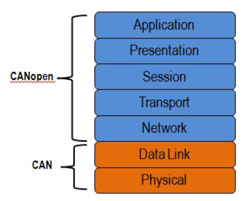
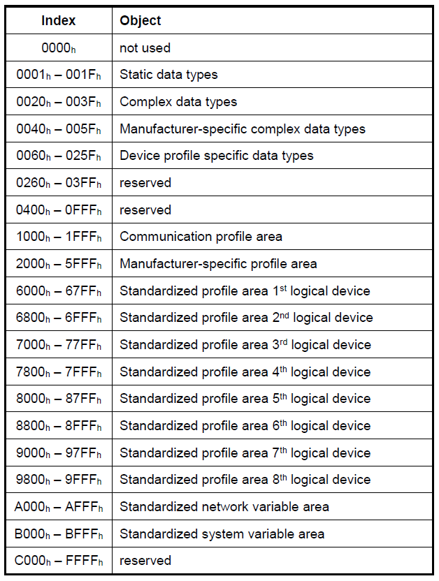
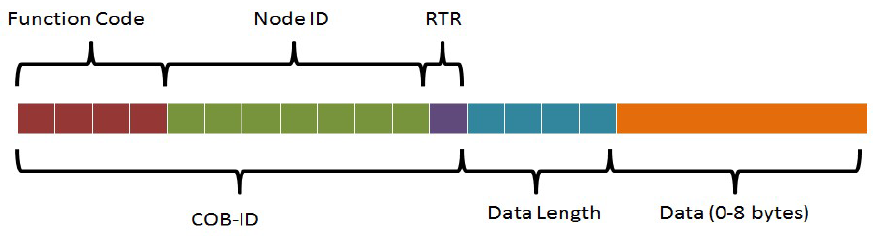
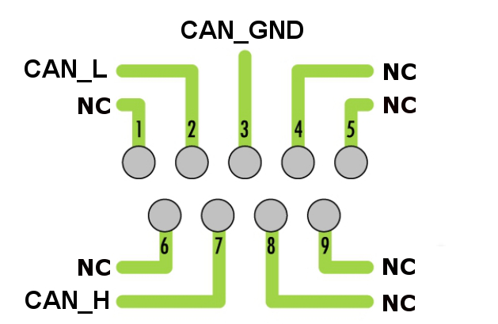
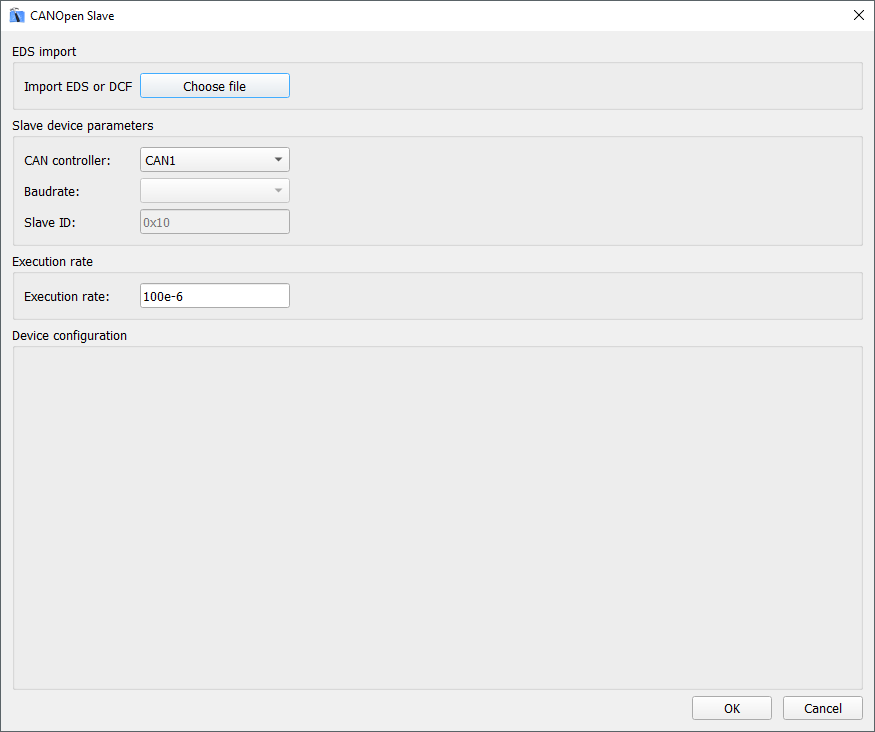
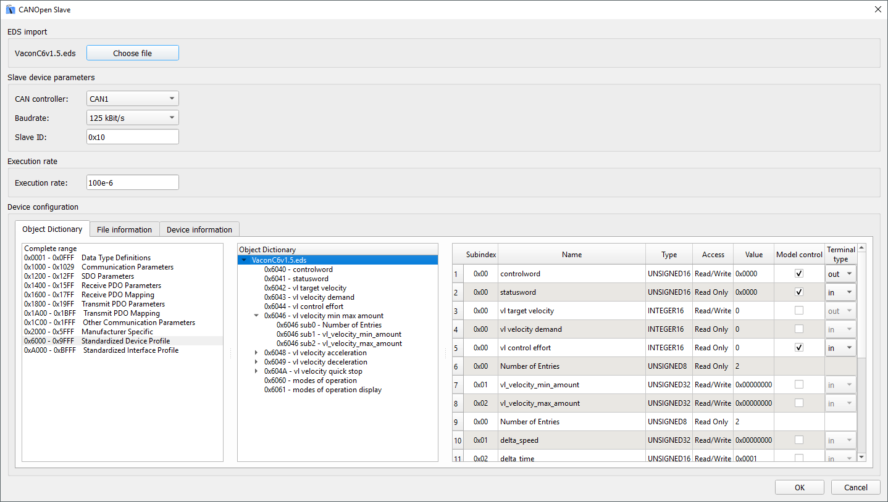
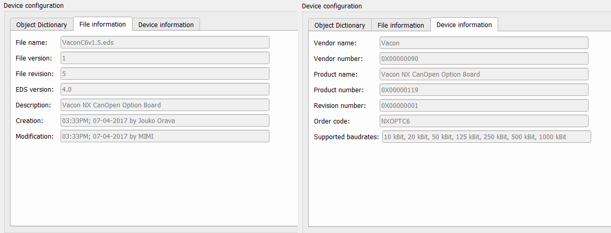
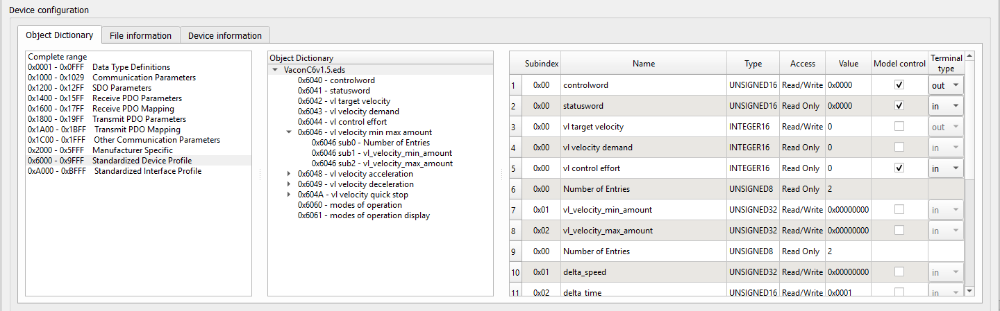
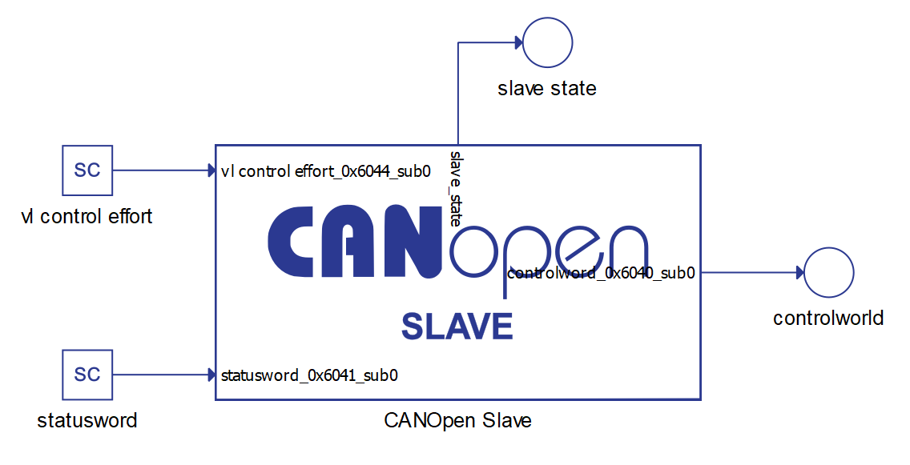

CANopen protocol
Description of the basics of the CANopen protocol and its implementation in the Typhoon HIL toolchain.
CANopen protocol introduction
CANopen is a CAN-based communication system. It comprises higher-layer protocols and profile specifications. CANopen has been developed as a standardized embedded network with highly flexible configuration capabilities. It was designed originally for motion-oriented machine control systems, such as handling systems. Today it is used in various application fields, such as medical equipment, off-road vehicles, maritime electronics, railway applications, or building automation.
In terms of the OSI communication systems model, CAN covers the first two levels: the physical layer and the data link layer. CANopen covers the top five layers (Figure 1): network (addressing, routing), transport (end-to-end reliability), session (synchronization), presentation (data encoded in standard way, data representation), and application. The application layer describes how to configure, transfer, and synchronize CANopen devices.

CANopen Object Dictionary
One of the central themes of CANopen is the object dictionary (OD), which is essentially a table that stores configuration and process data. It is a requirement for all CANopen devices to implement an object dictionary. The CANopen standard defines a 16-bit bit index and an 8-bit sub-index. The standard defines that certain addresses and address ranges must contain specific parameters. For example, the standard defines that index 1008h, sub-index 00h, must contain the device name. As such, any CANopen master can read this index from a network of CANopen slaves in order to uniquely identify each slave by name. Some object dictionary indices, such as the device type (1000h) are mandatory, and others, such as the manufacturer software version (100Ah) are optional.
The object dictionary is the method by which a CANopen device can be communicated with. For example, one could write True on the index in the manufacturer-specific section of the object dictionary (2000h-5FFFh), which the device could interpret as an enable signal for acquiring data from a voltage input. Conversely, the master may also want to read information from the object dictionary to get the acquired data, or to find out how a device is currently configured. The two communication mechanisms for accessing the object dictionary are Service Data Objects (SDOs) and Process Data Objects (PDOs), which will be explained later in this document.

CANopen message format
The message format for a CANopen frame is based on the CAN frame format. In the CAN protocol, the data is transferred in frames consisting of an 11-bit or 29-bit CAN-ID, control bits such as the remote transfer bit (RTR), start bit and 4-bit data length field, and 0 to 8 bytes of data. The COB-ID, commonly referred to in CANopen, consists of the CAN-ID and the control bits. In CANopen, the 11-bit CAN ID is split into two parts: a 4-bit function code and a 7-bit CANopen node ID. The 7-bit size limitation restricts the amount of devices on a CANopen network to 127 nodes.

CANopen protocols
SDO (Service Data Object) protocol
The CANopen protocol also specifies that each node on the network must implement a server that handles read/write requests to its object dictionary. This allows for a CANopen master to act as a client to that server. The mechanism for direct access (read/write) to the server’s object dictionary is the Service Data Object (SDO). The node whose object dictionary is accessed is referred to as the SDO server, and the node grabbing the data is referred to as the SDO client. The transfer is always started by the SDO client.
PDO (Process Data Object) protocol
Process data represents data that can change over time, such as the inputs (i.e. sensors) and outputs (i.e. motor drives) of the node controller. Process data is also stored in the object dictionary. However, since SDO communication only allows access to one object dictionary index at a time, there can be a lot of overhead for accessing continually changing data. In addition, the CANopen protocol has the requirement that a node must be able to send its own data, without needing to be polled by the CANopen master. Thus, a different method is used to transfer process data, using a communication method called Process Data Objects (PDOs).
There are two types of PDOs: transfer PDOs (TPDOs) and receive PDOs (RPDOs). A TPDO is the data coming from the node (produced) and a RPDO is the data coming to the node (consumed). In addition, there are two types of parameters for a PDO: configuration parameters and mapping parameters. The section of the object dictionary reserved for PDO configuration and mapping information are indices 1400h-1BFFh.
The configuration parameters specify the COB-ID, the transmission type, inhibit time (TPDO only), and the event timer, which are explained in this section. There are different methods through which a PDO transfer can be initiated. These methods include event driven, time driven, individual polling, and synchronized polling. The type of transmission is specified in the configuration parameters of the PDO. In event driven transmission, the PDO transfer is initiated when the process data in it changes. In time driven transmission, the PDO transfer occurs at a fixed time interval. In individual polling, the PDO transfer is initiated using a mechanism called remote request, which is not commonly used. In synchronized polling, the PDO transfer is initiated using a SYNC signal. The sync signal is frequently used as a global timer. For example, if the CANopen master sends out a SYNC message, multiple nodes may be configured to see and respond to that SYNC. In this way, the master is able to get a "snapshot" of multiple process objects at the same time.
NMT (Network Management) protocol
Network management services include the ability to change the state of a slave between initializing, pre-operational, operational, and stopped. The NMT protocol allows for a CANopen network to control the communication state of individual nodes. The pre-operational state is mainly used for the configuration of CANopen devices. As such, PDO communication is not permitted in the pre-operational state, and only becomes possible in the operational state. In the stopped state, a node can only do node guarding or heartbeats, but cannot receive or transmit messages. Certain types of CANopen communication are allowed in different states. For example, SDOs are allowed in the pre-operational state, but PDOs are not.
This is because SDOs are often used to initialize object dictionary parameters, whereas PDOs are often used to transfer continually updating data.
Special function protocols
- The SYNC protocol enables synchronous network behavior.
- The Time-stamp protocol is used for the adjustment of a unique network-time.
- The Emergency protocol can be used to inform other network participants about device-internal errors.
Error control protocol
Error control protocols enable the monitoring of a CANopen network. They comprise the Heartbeat-, Node-/Life-Guarding-, as well as the Boot-up protocol. The Heartbeat protocol is used to verify that all network participants are still available in a CANopen network and that they are still in their intended NMT FSA state. In old-fashioned CANopen systems, the CAN remote frame-based Node-/Life-guarding protocol is used for this purpose, instead of the Heartbeat protocol. CAN in Automation no longer recommends using CAN remote frame-based services.
The Heartbeat protocol is a cyclically transmitted message that informs all heartbeat consumers of the availability of the heartbeat producer. In addition to the availability of the heartbeat producer, the heartbeat protocol provides the current NMT FSA state of the heartbeat producer.
The boot-up protocol represents a special type of an error control protocol. It is transmitted as the final action in NMT FSA state Initialisation, prior to entering the Pre-operational NMT FSA state. The reception of this message indicates that a new device has been registered to the CANopen network.
Guarding is an outdated method of checking whether a guarded CANopen device is still working in the correct network state. As this is an RTR-based service, the Heartbeat protocol is used in new designs.
CANopen implementation in the Typhoon HIL toolchain
CANopen is supported by the following Typhoon HIL devices: HIL101, HIL404, HIL602+, HIL604, HIL506, and HIL606.

CAN controllers are not terminated with any resistors. You can add 120 Ohm termination resistors at your discretion.
Currently, only CANopen Slave is implemented. CANopen Slave is implemented as a Signal Processing component and can be found under Communication/CAN/CANopen/CANopen Slave.
CANopen Slave
The CANopen Slave component can be configured only by importing .eds or .dcf files.
The CANopen Slave component is shown in Table 1, while the CANopen dialog window is shown in Figure 5.
| component | component properties |
|---|---|
 CANopen Slave |
Import EDS or DCF file |
| CAN controller | |
| Baudrate | |
| Slave ID | |
| Execution rate |

| property name | property description |
|---|---|
| Import EDS or DCF file | Choose the configuration file |
| CAN controller | Choose which controller is sending the messages (CAN1 or CAN2) |
| Baudrate | Choose one of the available execution rates |
| Slave ID | Specify the Slave ID |
| Execution rate | Specify the execution rate of the Slave Signal Processing component |
Device configuration
Once the configuration is selected, the Baudrate combo-box and Slave ID value will be populated with the values from the configuration. The Device configuration part of the dialog window will be populated with the table representing the Object Directory (OD) of the Slave device. This is shown on the Figure 6.

- Object Dictionary - this tab is the main part of the Device configuration. In this tab, you can see all objects defined in the Slave device, specify values, and select which object to control through the model.
- File information - in this tab, basic file information is shown
- Device information - in this tab, basic device information is shown
File information and Device information tabs just present some basic info parsed from the file. The content of these fields can be seen in Figure 7.

Object Dictionary tab
The look of the Object Dictionary tab is shown in Figure 8.

- The left field enables you to select the object range to show in the middle field.
- In the middle field, all dictionary objects from the selected range are presented. The objects are presented in a tree view.
- In the right field, details like subindex, name, type, value, … of a selected dictionary object are shown.
Subindex, Name, Type, Access, and Value are directly parsed from the configuration file. The Value field can be further defined.
The Model control column defines if the value for a specific dictionary object will be controlled using the signal from the model. If this field is enabled, a terminal will be created on the component that can be used to connect any Signal Processing signal to that object. The direction of the terminal is defined using the Terminal type field. The Model control field is only available for dictionary objects in range from 0x2000 to 0x9FFF.
When parsing the configuration file, some Terminal type values are automatically defined. If the object is located in the Receive PDO mapping, the Terminal type will be defined as out. If the object is located in the Transmit PDO mapping, the Terminal type will be defined as in.
Connection example
Once the Object Dictionary fields are defined, terminals will be created on the component where you can connect the appropriate Signal Processing signals for the model, as shown in Figure 9.

For each directory object that has Model control enabled, a terminal on the component will be created. An additional terminal, called slave_state, will be automatically created to monitor the state of a Slave state machine.
Virtual HIL support
Virtual HIL currently does not support this protocol. When using a non-real-time environment (e.g. when running the model on a local computer), inputs to this component will be discarded and outputs from this component will be zeroed.